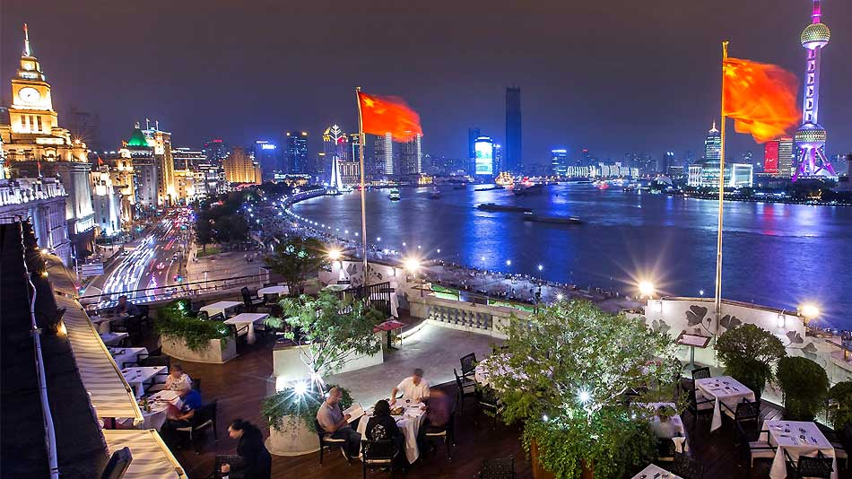

<!DOCTYPE html>
<html lang="en"></html>
<head>
	<meta charset="UTF-8">
	<!-- <meta name="viewport" content="width=device-width, initial-scale=1.0"> -->
	<!-- Link to the favicon image -->
	<link rel="icon" href="images/favicon.ico">
	<!-- Link to the reset file -->
	<link rel="stylesheet" href="css/html5reset.css">
	<!-- Link to the stylesheet -->
	<link rel="stylesheet" href="css/style.css">
	<title>Food in Shanghai</title>
</head>

<!-- All of the visible code in the page belongs in the body tag -->
<body>
	<!-- Header is a sematic tag page that aids readability -->
	<header>
		<!-- Nav is a sematic tag page that aids accessibility -->
		<nav>
			<ul>
				<!-- Since I am on the index file I added class = action to the link to index. -->
				<li class="active"><a href = "index.html" >Shanghai Food</a></li>
				<li><a href = "family.html">Family Food</a></li>
				<li><a href = "chinese.html">Chinese Cuisine</a></li>
				<li><a href = "foreign.html">Foreign Food</a></li>
			</ul>
		</nav>
		<!-- The h1 is a semantic tag that aids accessibility -->
		<h1>What you can eat in Shanghai?</h1>
	</header>

	<!-- Every page should have a main tag for accessibility -->
	<main>
		<p>
		   What have come to your mind when thinking about food in Shanghai? Tranditional Chinese cuisine? That's a must. 
		   If you have ever been there, you will know that you can definitely expect way more than that. As a Shanghainese 
		   who have lived in Shanghai for more than 20 years, I'd love to lead you through those amazing food in my hometown.
		   Don't miss the chance to see, feel, and even try them out yourself! Welcome to the Shanghai Food Tour!
		</p>
		<p>
			As a metropolis, there are around 40 mechelin star restaurants in Shanghai, including Cantonese, French 
			food, Italian food, even innovative food. Although they are extremely delicious, they are usually expensive. 
			It is common to spend more than $500 per person in a mechelin star restaurant in Shanghai.
		</p>
		<div class="act_images">
			<figure class="horizontal_align">
				
				<figcaption>L'Atelier de Joël Robuchon</figcaption>

			</figure>
			<figure class="horizontal_align">
				
				<figcaption>8 ½ Otto e Mezzo Bombana</figcaption>
			</figure>
			<figure class="horizontal_align">
				
				<figcaption>Ji Pin Court</figcaption>
			</figure>
			<figure class="horizontal_align">
				
				<figcaption>Taian Table</figcaption>
			</figure>
		</div>
		<p>
			There are also a large amount of high-class restaurants that are not necessary Michelin Restaurant but are located 
			in the most famous tourist attractions. <strong>The bund</strong> is one of the most famous places in Shanghai. 
			There are also of course lots of high-level restaurant at the Bund where both Chinese people and foreign people 
			would love to come. There are also restaurants in Yu Garden, Chenghuang Temple, etc.
		</p>
		 <div class="act_images">
			 <figure class="horizontal_align">
				 
				 <figcaption>Famous Restaurant at the Bund</figcaption>
			 </figure>
			 <figure class="horizontal_align">
			 
			 <figcaption>Famous Restaurant at the Yu Garden</figcaption>
		 	</figure>
		 </div>
		
	</main>

	<!-- Footer is a sematic tag page that aids readability -->
	<footer>
		<p>H. Cora Zhang &copy; 2022</p>
	</footer>
</body>
</html>
